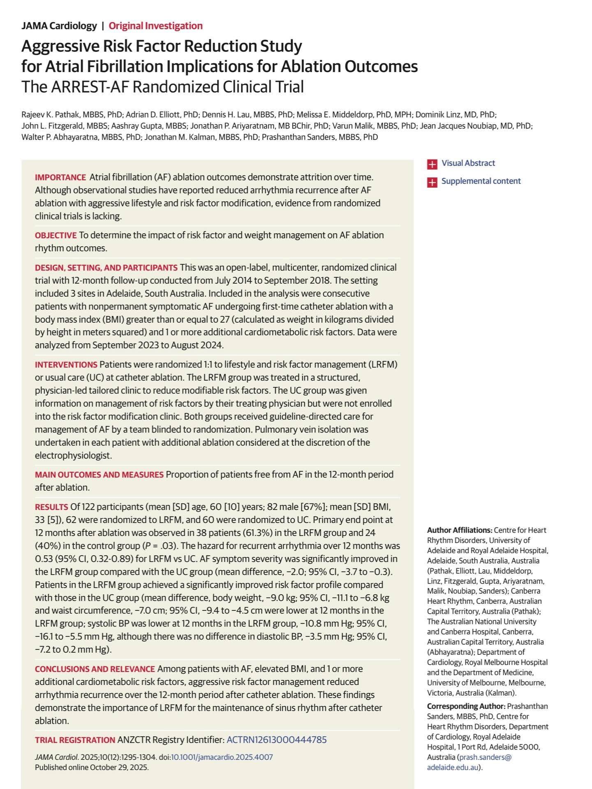

🫀 Atrial fibrillation isn’t just an electrical problem — it’s a risk-factor–driven disease
Atrial fibrillation (AF) is the most common sustained heart rhythm disorder. Instead of beating in a coordinated way, the upper chambers of the heart (the atria) fibrillate chaotically, leading to an irregular and often rapid heartbeat.
Why does this matter?
AF is associated with:
- Stroke (due to clot formation in the atria)
- Heart failure
- Hospitalizations and reduced quality of life
- Increased mortality
While catheter ablation can effectively restore rhythm, AF does not arise in isolation. It is largely driven by modifiable cardiometabolic risk factors — including obesity, hypertension, diabetes, sleep apnea, physical inactivity, and excess alcohol intake. These factors promote atrial remodeling and create the substrate that allows AF to persist and recur.
A new randomized clinical trial published in JAMA Cardiology (ARREST-AF) highlights this clearly. In patients undergoing AF ablation, those enrolled in a structured, physician-led lifestyle and risk factor management program had markedly better outcomes than usual care:
✅ 61% arrhythmia-free at 12 months vs 40%
✅ ~50% reduction in AF recurrence
✅ Improved symptoms and quality of life
✅ Significant improvements in weight, blood pressure, and exercise capacity.
Paper · JAMA CardiologyJAMA Cardiology articlejamanetwork.com
The key message is simple but powerful:
👉 Atrial fibrillation is not just an electrical disorder — it is a systemic, risk-factor–driven disease.
👉 Ablation works best when we treat the underlying drivers, not just the rhythm.
#AtrialFibrillation #StrokePrevention #Cardiology #Electrophysiology #LifestyleMedicine PreventiveCardiology AFablation RiskFactorModification EvidenceBasedMedicine

